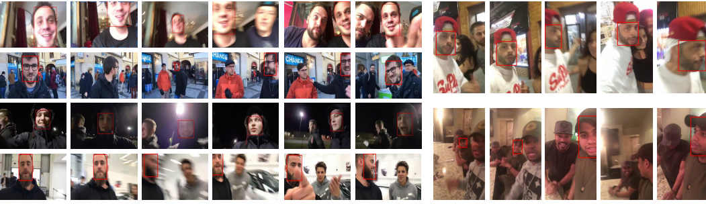

Yiming and his team have gathered material and created a publicly available database of
smartphone recorded selfie-style videos, intended to serve as the backbone of machine
learning based face tracking algorithms.
The database includes a whopping 95,635 frames, with a bounding box of the face
“manually labelled” on each frame. Out of hundreds of available mobile recordings, 80
videos were carefully selected based on various criteria such as the ratio of the time
in which the face remains in the frame, the speed of camera movement or the extremity of
lighting conditions. This ensures that the selected clips provide valuable and realistic content.

Regular object tracking cannot be sufficiently applied for software implementations
that require face tracking on mobile devices due to the unpredictability of certain factors,
4 of which are highlighted in Yiming’s paper.
First, face sizes in self-recorded mobile videos can change drastically as both the device
and its target are in constant movement, unlike for example desktop web cameras, which remain
still most of the time. This continuous and quick change of position and location also raises the possibility
of the target leaving and reentering the frame multiple times.
The face tracking engine must recognise
this, as well as keep up with fast camera movement. Additionally, it is not uncommon for more than one
face to be present in a single frame, and it is essential that the algorithm differentiates and keeps
track of each individually.
It is important for researchers to receive feedback and recognition from the international
academic and scientific community, which helps them with future progress. MobiFace has been
accepted by the 14th IEEE International Conference on Automatic Face and Gesture Recognition (FG 2019).
This annual/biannual conference takes place in France in 2019, where researchers will get a chance to
broadcast their findings to the community via demos, presentations and exhibitions.
Mobiface.io